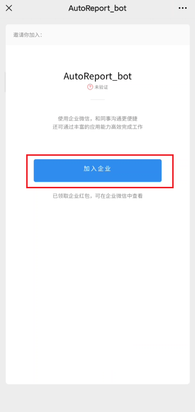
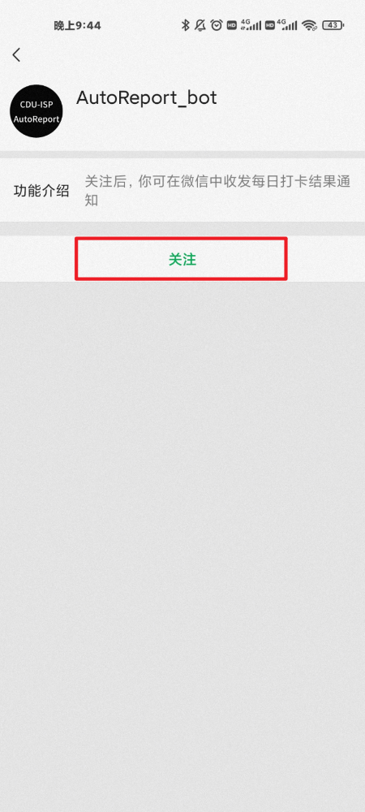
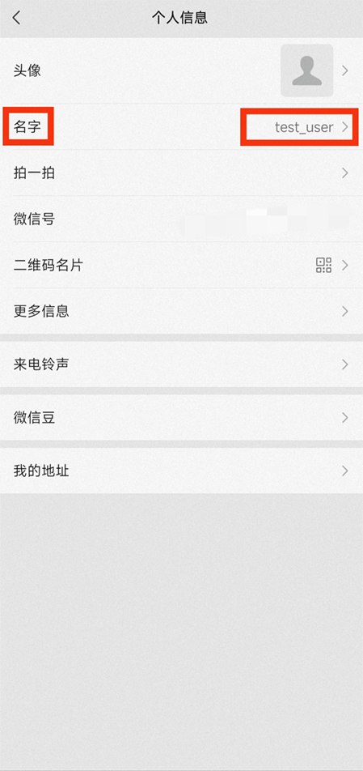

<!DOCTYPE html>
<html lang="zh-CN">

<head>
    <meta name="viewport"
          content="width=device-width, initial-scale=1.0, maximum-scale=1.0, minimum-scale=1.0, user-scalable=no">
    <meta charset="utf-8">
    <link rel="shortcut icon"
          href="../res/logo.png" type="image/x-icon">
    <title>一分钟无痛配置微信推送</title>
</head>

<body style="background-color:#000000;"></body>

<body>
<font color="#FFFFFF">
    <h1>一分钟无痛配置微信推送<font color="#FF0000">（使用微信打开本页面）</font></h1>

    <h2><font color="#FF0000">0.服务已暂停</font></h2>

    <!-- <h2>1.用微信扫描如下二维码（长按图片，选择识别图中的二维码）</h2>

    <p></p>

    <ul>
        <li>PS:若二维码过期，请联系 <a href="mailto:benjia.h@qq.com">benjia.h@qq.com</a>更新</li>
    </ul>

    <h2>2.加入企业微信（无需下载企业微信）</h2>

    <p></p>

    <h2>3.添加微信插件，用微信扫描如下二维码</h2>

    <ul>
        <li>这样就可以在微信APP中获取企业微信的推送，从而无需下载企业微信</li>
    </ul>

    <p></p>

    <p></p>

    <ul>
        <li>
            !!注意!!：<strong>如果显示⌈当前企业未验证主体信息，微信插件已达到当日关注人数上限。企业验证主体信息后可继续关注，你也可下载企业微信App使用。⌋请跳过此步，并下载企业微信接收通知。</strong>
        </li>
        <li>PS:若二维码过期，请联系 <a href="mailto:benjia.h@qq.com">benjia.h@qq.com</a> 更新</li>
    </ul>

    <h2>4.记录刚刚添加企业时，您的微信名字</h2>

    <p></p>

    <h2>5.填写信息收集表</h2>

    <ul>
        <li><a href="https://benjiah.gitee.io/r/r/Qaq"><font color="#42a5f5">信息收集表（点我）</font></a></li>
    </ul>

    <h2>6.<font color="#FF0000">告知我您的微信名字以及选择的服务，稍后我将为您加入队列</font></h2> -->
</font>

</body>

</html>